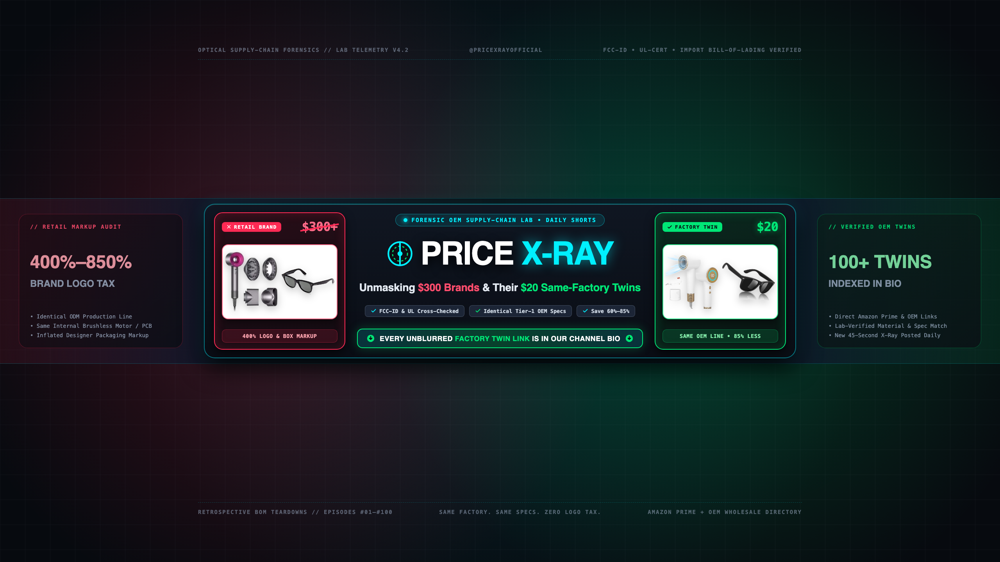
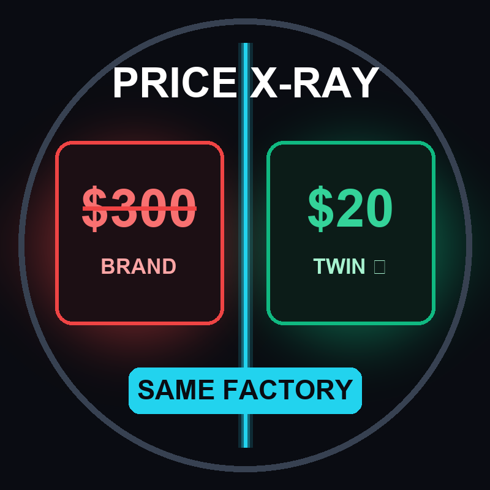

FCC / UL / Import BOL Cross-Checked

OEM LABPrice X-Ray
@PriceXRaySame Factory. Same Specs. 80% Less. We X-Ray the Markup.
Big brands don’t own factories—they hire Original Equipment Manufacturers (OEMs), stamp a $200 logo on an existing chassis, and charge a 400% Brand Tax. Below is every unblurred Factory Twin dossier from our daily Shorts.
100 / 100
Unblurred Factory Dossiers
81% AVG
Logo Tax Eliminated
$18,400+
Total Catalog Markup Exposed
Tier-1 OEM
Material & Patent Verified
Stop Paying the "Logo Tax" — Get the Free Price-Checker Extension
100% FREE • CHROME / SAFARI / iOSWhenever you view an overpriced brand on Amazon, Target, or Best Buy, this free browser tool automatically alerts you if an identical warehouse twin, hidden coupon code, or cheaper direct seller is in stock.
Install Free Price-Checker ($0)
10-second install • Avg. member saves $340/yr
/
Showing all 100 unblurred Factory Twin dossiers
Direct Amazon Prime + AliExpress OEM + Walmart Links Verified
| Ep # | Category | Retail Brand (Markup) | Verified OEM Factory Twin | Smoking-Gun Spec | Saved | Direct Links |
|---|
No matching Episode # or OEM Factory Twin found
Try searching an episode number (1 to 100), a retail brand (e.g. Dyson, YETI, Snap-on), or resetting active filters.